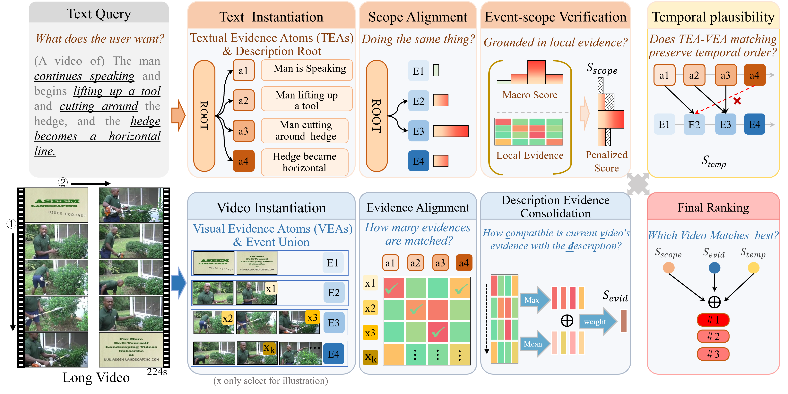
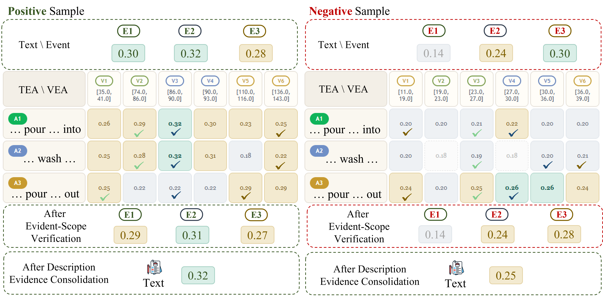

Structured formulation
MoMo reframes multi-event retrieval as scope-aware and evidence-aware alignment, rather than flat video-text matching.
Multi-event video-text retrieval is challenging because long videos and long-form descriptions are not aligned as flat one-to-one semantic units. A candidate video may contain multiple semantic scopes, while a description may target only part of the video and mix global narrative with local evidence. This creates a scope-evidence mismatch, where flat matching either preserves coarse relevance while missing decisive clues, or overreacts to local evidence without establishing a globally valid match. To address this issue, we propose MoMo, a training-free framework for structured multi-event video-text alignment and retrieval. Instead of absorbing structural complexity through additional task-specific training, MoMo organizes text and video into retrieval-compatible structures and performs MacrO-scope and MicrO-evidence alignment through joint cross-level evaluation. In this way, candidate ranking is determined not only by high-level semantic compatibility, but also by whether event-local evidence can verify the matched scope, whether description-level support remains sufficiently complete, and whether the final match is temporally plausible. Extensive experiments on Charades-Event and ActivityNet-Event show that this structured training-free formulation substantially improves multi-event retrieval over strong baselines.
Select a query video to inspect its temporal decomposition and the retrieved text structures.
Select a text query to inspect its action decomposition and the retrieved video structures.
These examples are meant to show why flat matching struggles on long, multi-event content and why scope-aware, evidence-aware retrieval behaves more reliably.


The tables below reproduce the paper results for Text2Video and Video2Text retrieval.
MoMo reframes multi-event retrieval as scope-aware and evidence-aware alignment, rather than flat video-text matching.
The method decomposes text and video into retrieval-compatible structures and performs joint cross-level evaluation without task-specific training.
Experiments on Charades-Event and ActivityNet-Event show clear improvements over strong flat baselines in both Text2Video and Video2Text retrieval.